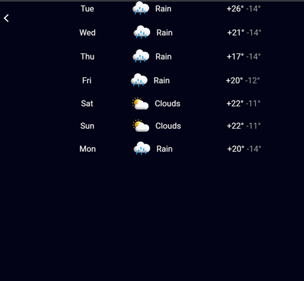
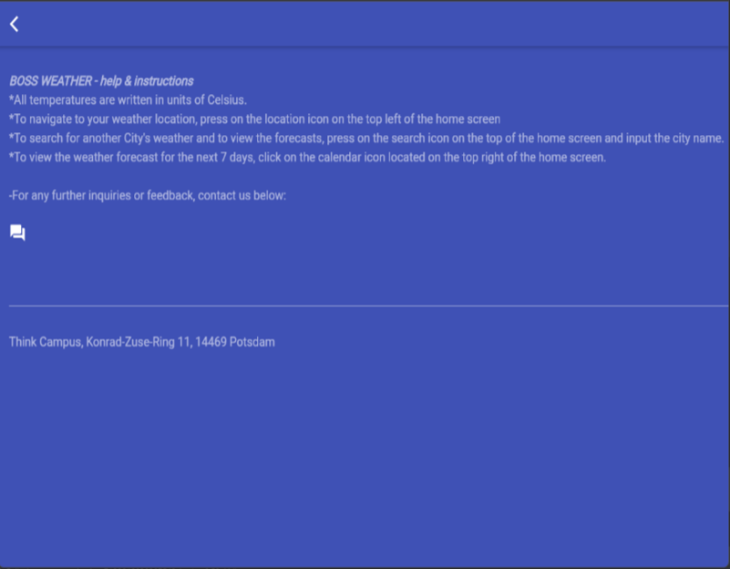
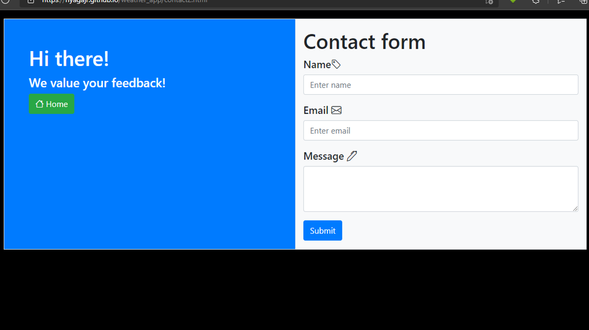
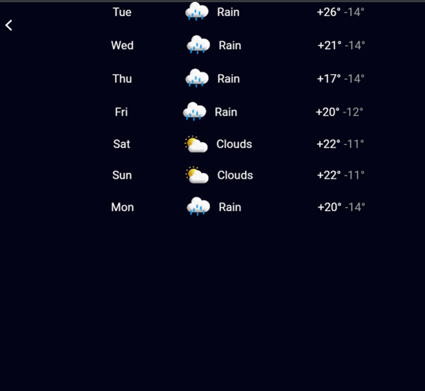
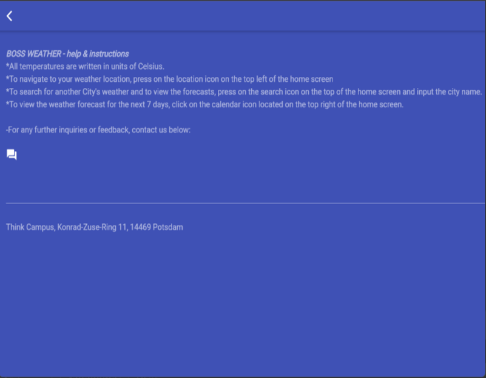
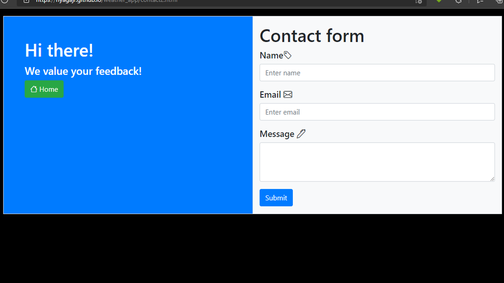

Flutter Weather App
This simple weather app was built with Flutter on Android Studio. It contains the current weather of any given city, as well as the current weather of the user's current location upon the grant of the location permission by the user.
This weather app also includes the 7 days' weather forcast and a contact page, which opens onto a corresponding website, hosted on GitHub's server.
I created this weather application by myself. The rest of my team had a hand in creating the website, which can be accessed from the app with the "contact" option.
 




